排序
筛选
追加数据时，自动应用样式
...
行区域
列区域
值区域
过滤器
有标题行，且是第一行
必须是一维表
不能有空行
不能有空单元格
不能有合并单元格
建议从超级表开始
值字段设置
排序
值汇总依据
值显示方式
组合
命名透视表
移动透视表
删除透视表：选择透视表 → 按删除键 delete 删除
推迟布局更新：大数据量时，请开启。。。否则可能卡到你怀疑人生；但是部分功能会被暂时被限制
手动刷新：数据源部分值变化后，默认不会自动更新，需要手动刷新；可以使用"数据透视表分析"的刷新或选项卡"数据"中的刷新
自动刷新：设置透视表"选项" → "数据" → "每次打开文件时刷新数据"
字段设置、字段设置
选择数据
指定图表放置位置：新工作表或现有工作表
透视数据
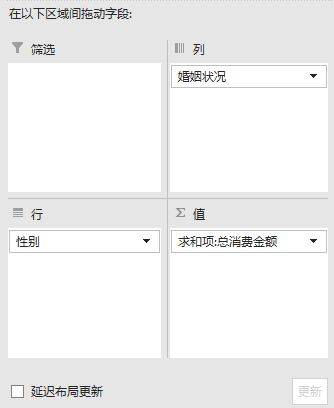
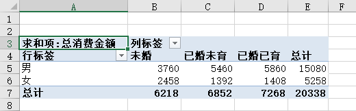
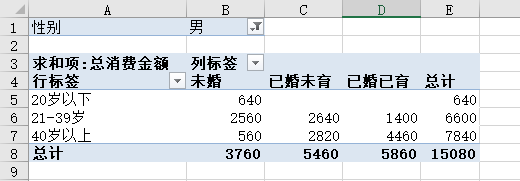
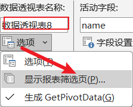
删除空白行：全选数据 → 定位 Ctrl + G → 定位条件 → 空值 → 右键删除 → 整行
| item | desc |
|---|---|
| 图表区 | Chart Area |
| 绘图区 | Plot Area |
| 图表标题 | Chart Title |
| 数据系列 | Data Series |
| 数据标签 | Data Labels |
| 图例 | Legend |
| 坐标轴 | Axis |
| 网格线 | Gridline |
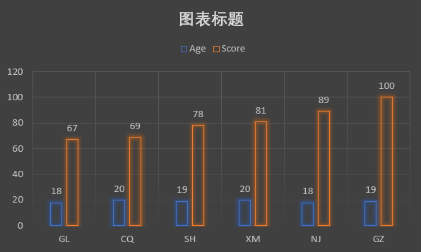
坐标轴 → 最小值、最大值、单位
标记 → 标记选项
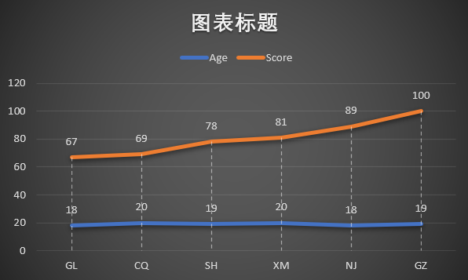
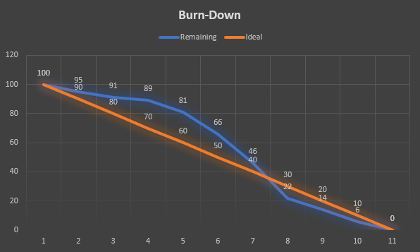
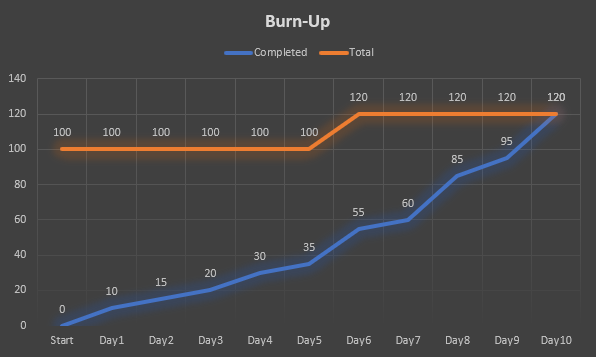
图表标题
数据标签
图例
第一扇区起始角度：默认是 0
饼图分离：整体设置或单独指定
数据标签：显示指定标签以便强调突出
数字：格式
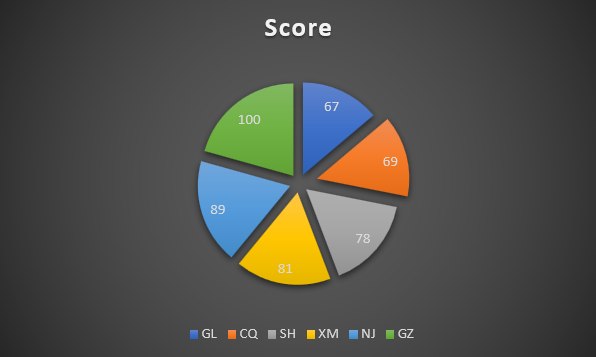
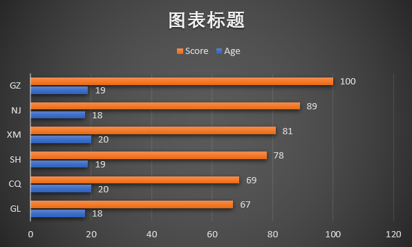
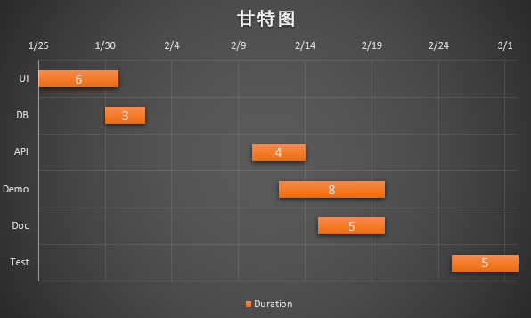
| Phase | Start | Duration | End |
|---|---|---|---|
| Initial | 2026-1-26 | 2026-1-29 | |
| Planning | 2026-1-28 | 2026-1-31 | |
| UI | 2026-2-1 | 2026-2-6 | |
| Developement | 2026-2-1 | 2026-2-15 | |
| Test | 2026-2-16 | 2026-2-28 | |
| Delivery | 2026-2-28 | 2026-3-8 |
质量管控：用于监控生产过程是否稳定，数据分布是否符合规格要求
数据分析：在探索性数据分析中，它是第一步，用于了解数据的整体情况和潜在问题
绩效评估：分析员工绩效得分、客户满意度等数据的分布
科学研究：处理实验数据，分析测量结果的分布规律
金融分析：分析投资回报率、风险等的分布
样本空间通常比较大，如不少于50个，才具备统计意义
仅仅适合统计单列数据
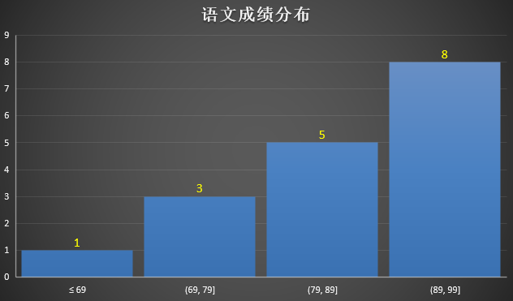
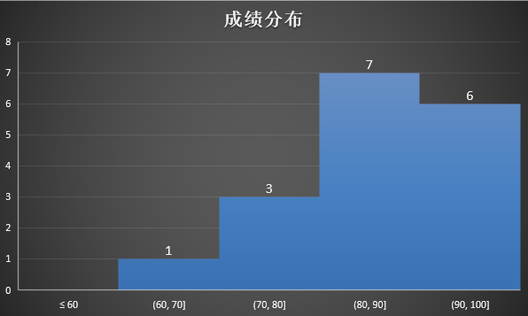
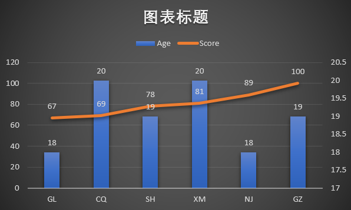
折线
柱形
盈亏
=randbetween(60,100)
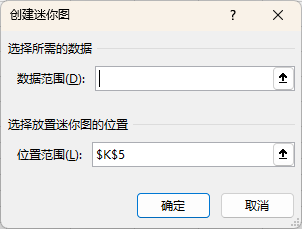
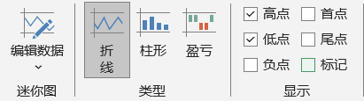
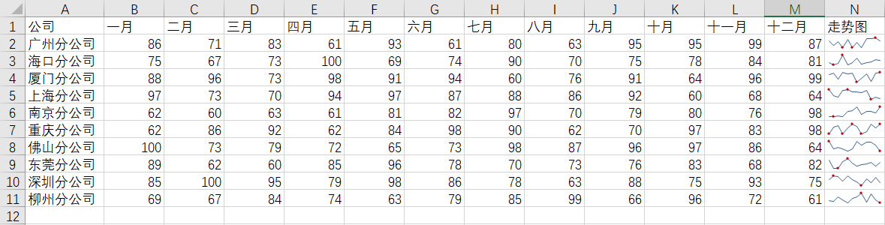